Hematology Treatment in Bangalore
Hematology is the branch of medicine that diagnoses and treats diseases of the blood, bone marrow and lymph nodes — anemia, bleeding and clotting problems, low or high blood counts, inherited conditions like thalassemia, and blood cancers. Many blood disorders can be cured or well controlled when they are found early.

Overview
What is hematology?
Dr. Neema Bhat, a US-trained hematologist in Bangalore with 10+ years of experience, offers complete hematology treatment in Bangalore for adults and children, from simple anemia to bone marrow transplant.
Blood disorders are very common in India. About 48 out of every 100 women and two out of three young children in Karnataka have anemia (NFHS-5). In 2022, about 55,600 people in India were diagnosed with leukemia, 55,300 with lymphoma and 19,400 with multiple myeloma (National Cancer Registry Programme, ICMR). An abnormal blood report is often the first clue, and the right hematology treatment in Bangalore starts with finding the exact cause.
Your blood, in simple words
Your blood has three main types of cells, all made in the bone marrow:
- Red blood cells carry oxygen to every part of your body.
- White blood cells fight infections.
- Platelets help your blood clot and stop bleeding.
Your blood also contains clotting proteins that work with platelets to seal a cut. When any of these are too low, too high or not working properly, it is called a blood disorder.
What does a hematologist do?
A hematologist is a doctor who specialises in blood disorders. A hematologist:
- Finds out why your blood counts or blood tests are abnormal
- Treats anemia, bleeding and clotting disorders, and low or high blood counts
- Treats blood cancers such as leukemia, lymphoma and myeloma (a hemato-oncologist)
- Performs bone marrow tests and bone marrow (stem cell) transplants
- Works with other doctors, such as gynaecologists, surgeons and kidney specialists, when a blood problem affects their care
Pediatric hematology
A pediatric hematologist treats blood disorders in babies, children and teenagers. Dr. Neema Bhat is trained in both adult and pediatric hematology.
Children may look pale, bruise easily, bleed for a long time after a fall or vaccine, get infections often, or have swollen glands or a swollen tummy. Children with these signs should see a pediatric hematologist.
Signs
Signs you should see a hematologist
Many blood disorders are first found on a routine blood test. See a hematologist if you have:
- Low hemoglobinAnemia that keeps coming back or does not improve with iron tablets
- Constant tirednessWeakness, breathlessness or pale skin
- Easy bruisingSmall red or purple spots on the skin (petechiae)
- Frequent bleedingNosebleeds, bleeding gums, or heavy or long periods
- Bleeding that won’t stopAfter a cut, tooth extraction or surgery
- Leg swelling or painSwelling, pain or redness in one leg — possibly a clot (DVT)
- Repeated clotsBlood clots at a young age, or repeated clots or miscarriages
- Abnormal countsLow or high platelet, white cell or red cell counts on your report
- Frequent infectionsInfections that are frequent or unusual
- Swollen lymph nodesGlands in the neck, armpit or groin
- Unexplained symptomsFever, night sweats or weight loss without a clear reason
- Bone painEspecially in the back
See a doctor urgently if you have heavy bleeding that will not stop, sudden chest pain or breathlessness, sudden weakness on one side of the body, blood in vomit or black stools, high fever with very low white cell counts, or fainting.
What causes blood disorders?
Blood disorders have many causes. The common ones are:
- Nutritional deficiency: low iron, vitamin B12 or folate.
- Blood loss: heavy periods, piles, ulcers or slow bleeding in the gut.
- Inherited (genetic) conditions: thalassemia, sickle cell disease, hemophilia and some clotting disorders.
- Immune system problems: the body attacks its own blood cells, as in ITP or autoimmune hemolytic anemia.
- Long-term illnesses: kidney disease, liver disease, thyroid problems and autoimmune diseases.
- Infections: such as dengue, malaria, viral infections and worm infections.
- Medicines: some painkillers, antibiotics, blood thinners and chemotherapy.
- Bone marrow problems: aplastic anemia, myelodysplastic syndromes and blood cancers.
Who is at risk?
The risk is higher for:
- Women with heavy periods, and pregnant or breastfeeding women
- Babies, children and teenagers, who grow fast
- Vegetarians and vegans, who may get too little vitamin B12
- Adults over 60
- People with a family history of blood disorders
- Couples where both partners are thalassemia carriers
- People with long-term illnesses or who take certain medicines for a long time
- People who smoke or have had radiation or chemotherapy
- People who are overweight, inactive, or sit for long hours (higher clot risk)
Complications
What happens if blood disorders are left untreated?
Some blood problems seem mild at first but can become serious over time:
- Heart strain
Long-term anemia makes the heart work harder and can lead to heart failure.
- Dangerous bleeding
Low platelets or clotting disorders can cause bleeding into joints, the gut or the brain.
- Blood clots
An untreated clot in the leg can travel to the lungs (pulmonary embolism) and be life-threatening.
- Serious infections
Low white cell counts make infections more likely and harder to treat.
- Organ damage
Iron overload from repeated transfusions can harm the heart and liver.
- Pregnancy problems
Anemia and clotting disorders raise the risk of miscarriage, preterm birth and heavy bleeding.
- Late cancer diagnosis
An abnormal blood count can be the first sign of leukemia, lymphoma or myeloma. Early diagnosis improves treatment results.
Conditions
Blood disorders we treat
| Group | Conditions | What it means in simple words |
|---|---|---|
| Red blood cell disorders | Iron deficiency anemia, vitamin B12 and folate deficiency, anemia of chronic disease, hemolytic anemia, polycythemia | Too few red cells, red cells that break down early, or too many red cells. |
| Inherited blood disorders | Thalassemia, sickle cell disease, hereditary spherocytosis, G6PD deficiency | Conditions passed down in families that affect how red cells are made or how long they last. |
| Platelet disorders | ITP (immune thrombocytopenia), low platelets in dengue or pregnancy, high platelets (thrombocytosis) | Too few or too many platelets, causing bleeding or clotting. |
| Bleeding disorders | Hemophilia A and B, von Willebrand disease, other clotting factor deficiencies | The blood does not clot properly, so bleeding lasts longer. |
| Clotting (thrombosis) disorders | Deep vein thrombosis (DVT), pulmonary embolism, thrombophilia, antiphospholipid syndrome | The blood clots too easily, blocking veins or arteries. |
| White blood cell disorders | Low white cell count (neutropenia), high white cell count | Too few white cells to fight infection, or too many for an unclear reason. |
| Bone marrow failure | Aplastic anemia, pure red cell aplasia | The bone marrow stops making enough blood cells. |
| Blood cancers | Acute and chronic leukemia, Hodgkin and non-Hodgkin lymphoma, multiple myeloma, myelodysplastic syndromes (MDS), myeloproliferative neoplasms (MPN) | Cancers that start in the bone marrow, blood or lymph nodes. |
| Immune and rare disorders | HLH (hemophagocytic lymphohistiocytosis), primary immunodeficiency disorders, thrombotic microangiopathy | Rare conditions where the immune system or small blood vessels damage blood cells. |
| Children’s blood disorders | Anemia, thalassemia, ITP, hemophilia and childhood leukemia | Specialised care for babies, children and teenagers. |
Diagnosis
How are blood disorders diagnosed?
The right test depends on your symptoms and blood report. Dr. Neema Bhat may advise some of these tests:
- 01Complete Blood Count (CBC)
Checks hemoglobin, white cells and platelets.
- 02Peripheral blood smear
Looks at the shape and size of blood cells under a microscope.
- 03Reticulocyte count
Shows whether the bone marrow is making new red cells.
- 04Iron studies, vitamin B12 and folate
Find nutritional causes of anemia.
- 05Hemoglobin electrophoresis / HPLC
Checks for thalassemia and sickle cell disease.
- 06Coagulation tests
PT/INR, APTT, fibrinogen and D-dimer check how well your blood clots.
- 07Clotting factor assays & von Willebrand tests
Diagnose hemophilia and other bleeding disorders.
- 08Thrombophilia screening
Looks for inherited or acquired causes of repeated blood clots.
- 09Flow cytometry (immunophenotyping)
Identifies abnormal cells in leukemia and lymphoma.
- 10Bone marrow aspiration and biopsy
Examines the bone marrow directly.
- 11Cytogenetics, FISH & molecular tests
Find genetic changes that guide treatment of blood cancers.
- 12Lymph node biopsy
Diagnoses lymphoma.
- 13Imaging
Ultrasound, Doppler, CT or PET-CT find clots, enlarged lymph nodes or spleen, and check the spread of blood cancers.
Treatment
Hematology treatment options
Treatment depends on the type of blood disorder, its cause, your age and your overall health. Some conditions need only a short course of treatment, while others need long-term care.
Nutritional supplements
Iron, vitamin B12 and folic acid as tablets, syrups or injections.
IV iron infusion
A faster way to replace iron when tablets do not work or cannot be taken.
Treating the root cause
Such as heavy periods, gut bleeding, infections, thyroid or kidney problems, with the right specialist.
Blood transfusion
Red cells, platelets or plasma, for severe anemia, bleeding or low counts.
Iron chelation therapy
Removes extra iron in patients who need regular transfusions, such as in thalassemia.
Clotting factor replacement
Including preventive (prophylaxis) therapy for hemophilia and other bleeding disorders.
Anticoagulation therapy
Blood-thinning treatment that treats and prevents blood clots, with regular monitoring.
Immune-suppressing therapy
For ITP, autoimmune hemolytic anemia and aplastic anemia.
Count-boosting medicines
To raise platelets, white cells or red cells when needed.
Chemotherapy
Anti-cancer medicines for leukemia, lymphoma and myeloma.
Targeted therapy
Medicines that attack specific changes in cancer cells, often as tablets.
Immunotherapy
Monoclonal antibodies and other treatments that help the immune system fight blood cancers.
CAR-T cell therapy
For selected relapsed blood cancers, where suitable and available.
Autologous stem cell transplant
Your own stem cells are returned after high-dose treatment, mainly for myeloma and lymphoma.
Allogeneic (donor) stem cell transplant
Healthy stem cells from a matched or half-matched donor. It can cure thalassemia, sickle cell disease, aplastic anemia and some leukemias. Learn more
Therapeutic phlebotomy
Removing blood to lower high red cell counts or iron levels.
Plasmapheresis
Plasma exchange removes harmful antibodies or proteins from the blood.
Supportive care
Infection prevention, vaccines, pain relief and nutrition support.
Counselling & palliative care
Emotional support and symptom control for patients and families.
Watch and wait
Active monitoring for mild or slow-growing conditions that do not need treatment yet.
Do not take iron tablets, blood thinners or steroids for a long time without a doctor’s advice. Wrong or delayed treatment can hide a serious cause.
Living well and preventing blood disorders
Not every blood disorder can be prevented, but these steps help:
- Eat iron-rich foods: ragi, green leafy vegetables (palak, methi, drumstick leaves), dals, rajma, chana, jaggery, dates, eggs, chicken, fish and meat.
- Add vitamin C to meals (lemon, amla, orange, guava) to help your body absorb iron, and avoid tea or coffee within one hour of meals.
- Get enough vitamin B12: milk, curd, paneer, eggs and fish. Vegetarians may need supplements.
- Prevent blood clots: stay active, drink enough water, and walk or stretch during long journeys.
Protect yourself
- Get a thalassemia carrier test (HPLC) before marriage or pregnancy. If both partners are carriers, each child has a 1 in 4 chance of thalassemia major.
- Protect yourself from infections: use mosquito protection against dengue and malaria, and take deworming tablets as advised.
- Avoid self-medication: some painkillers and other medicines affect platelets and blood counts.
- If you have a bleeding disorder: tell your dentist and surgeon before any procedure, and carry a medical card.
- Keep every follow-up appointment and repeat blood tests as advised.
India’s Anemia Mukt Bharat programme gives free iron and folic acid tablets to children, teenagers, and pregnant and breastfeeding women through government health centres.

About the doctor
Dr. Neema Bhat
- SpecialityHematologist, Pediatric Oncologist & Bone Marrow Transplant Specialist
- EducationMD (USA) · Fellowship (FAAP) in Pediatric Hematology, Oncology & Bone Marrow Transplantation, Penn State Health, USA
Dr. Neema Bhat is a Haemato-Oncologist in Bangalore with more than ten years of experience treating blood disorders and blood cancers in children and adults. She finds out why your blood counts are abnormal and treats that cause, not just the numbers.
FAQs
Quick answers to the questions patients ask most about seeing a hematologist.
01What does a hematologist treat?
A hematologist treats diseases of the blood, bone marrow and lymph nodes. This includes anemia, bleeding and clotting disorders, low or high blood counts, thalassemia, sickle cell disease and blood cancers like leukemia, lymphoma and myeloma.
02When should I see a hematologist?
See a hematologist if your blood report shows abnormal counts, if anemia does not improve with treatment, or if you have easy bruising, unusual bleeding, repeated blood clots, swollen glands or a family history of a blood disorder.
03Is a hematologist the same as an oncologist?
Not exactly. A hematologist treats all blood disorders, both non-cancerous and cancerous. A hemato-oncologist specialises in blood cancers. An oncologist treats cancers of other organs. Dr. Neema Bhat treats both blood disorders and blood cancers.
04Does being referred to a hematologist mean I have cancer?
No. Most people seen by a hematologist have non-cancerous problems like anemia, low platelets or clotting issues. A referral simply means a blood specialist will find the cause faster.
05What happens at the first hematology appointment?
The doctor will ask about your symptoms, medical and family history, and medicines. She will examine you and review your reports. You may need more blood tests, and rarely a bone marrow test.
06What should I bring to my first visit?
Bring all recent blood reports, scans, discharge summaries and a list of your current medicines. Older reports help show how your counts have changed over time.
07Are blood disorders curable?
Many are. Nutritional anemias are usually cured once the cause is fixed. Some conditions like hemophilia need lifelong care, while thalassemia, sickle cell disease, aplastic anemia and some blood cancers can be cured with a bone marrow transplant.
08Is a bone marrow test painful?
The area is numbed with local anaesthesia, so most people feel only pressure and brief discomfort. The test usually takes 15 to 30 minutes, and you can go home the same day.
09Can children see a hematologist?
Yes. Dr. Neema Bhat is a US board-certified pediatrician and pediatric hematologist. She treats babies, children and teenagers with anemia, thalassemia, ITP, hemophilia and childhood leukemia.
10How much does hematology treatment in Bangalore cost?
The cost depends on the condition. Blood tests and tablets are usually affordable, while transfusions, chemotherapy and bone marrow transplant cost more. The clinic can share an estimate after your first consultation.
Abnormal blood report?
Unexplained tiredness, bruising or bleeding? Get it checked by a blood specialist. Book a consultation for hematology treatment in Bangalore with Dr. Neema Bhat today.
- +91 78997 56677 · Call or WhatsApp
Medical disclaimer: This page is for general information only and is not a substitute for medical advice. Please consult a doctor for diagnosis and treatment.